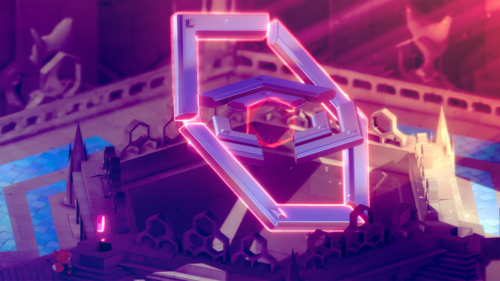
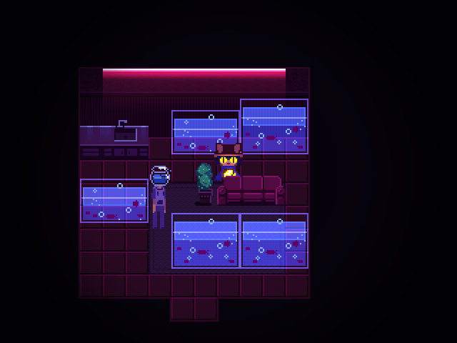
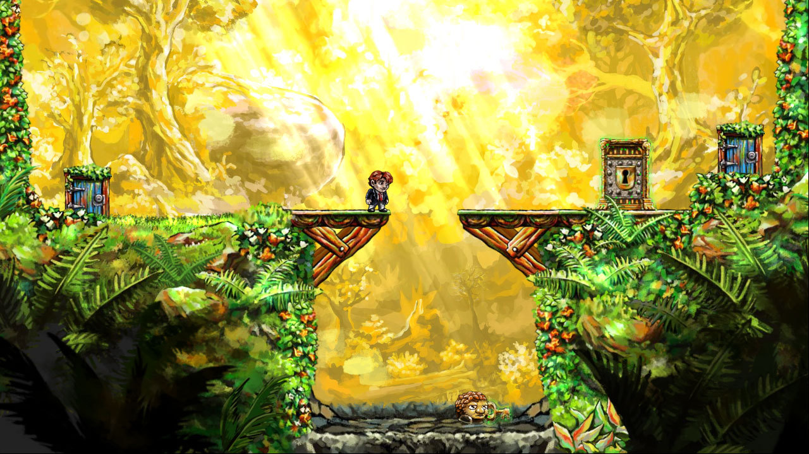
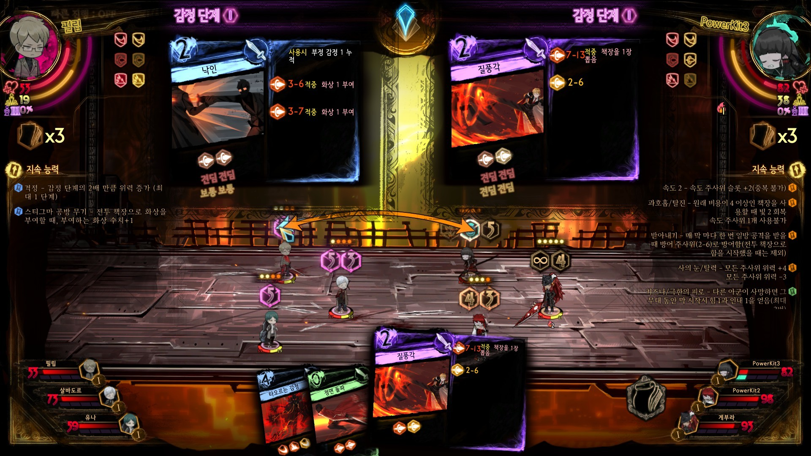
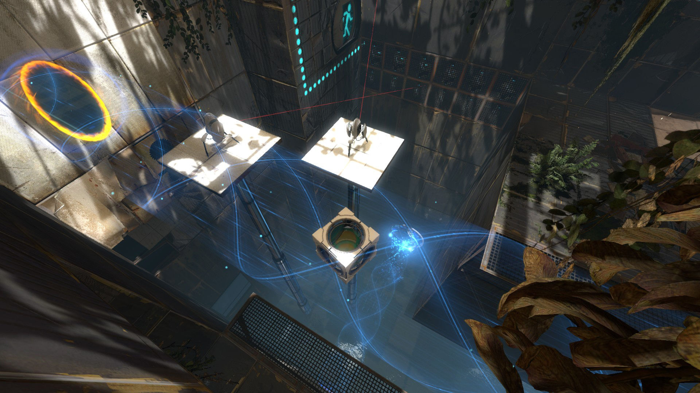
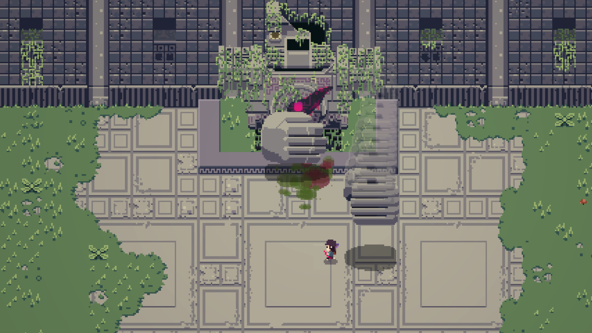
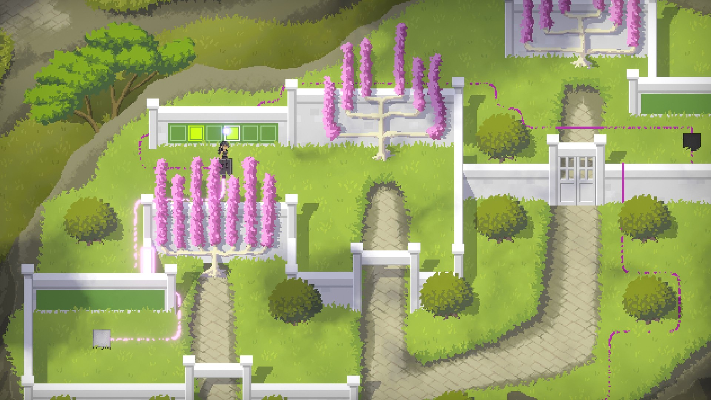
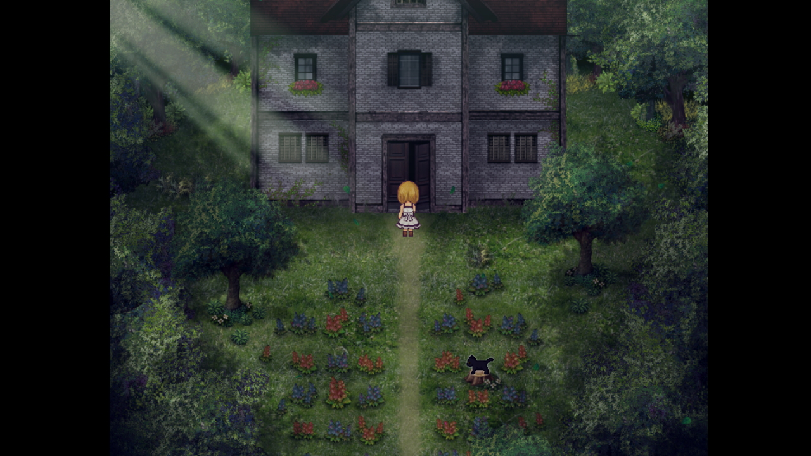
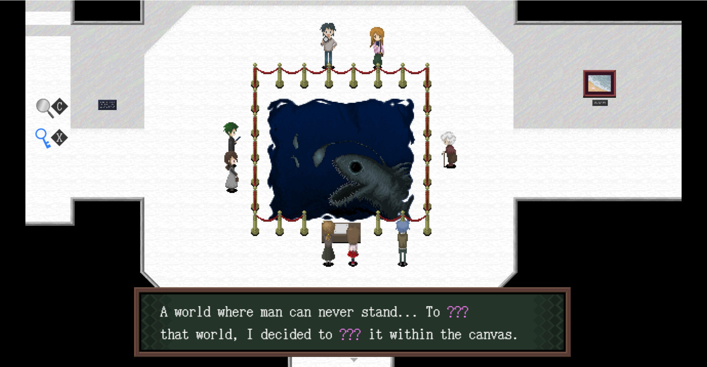
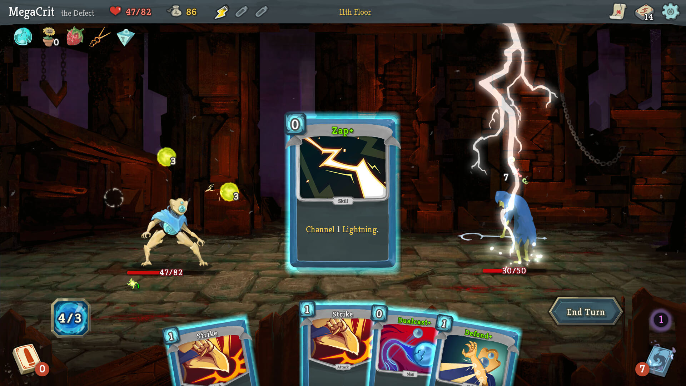

9점

장르 : 매트로배니아, 퍼즐, 소울라이크
섬에 도착한 여우가 섬의 비밀을 풀기 위해 매뉴얼을 모으는 게임입니다.
모든것은, 매뉴얼에, 있습니다.
소울라이크 부분이 많이 어려운 편이지만, 무적 옵션을 게임 내에서 지원해 걱정하지 않아도 됩니다.
컨트롤러를 지원합니다. 키보드로 해도 상관없습니다.
가격 : 31,000 (할인률 20%, 가끔)
도전과제 100% 난이도 : 매우 어려움. 일부 공략을 보는것을 추천합니다.
DLC 없음.

장르 : 스토리, 쯔꾸르
주의 : 전체화면을 지원하지만, 추천하지 않습니다.
다른 세계로 온 Niko를 집으로 돌려 보내기 위해, 태양이 사라진 도시를 탐험하는 이야기.
원래 무료인 쯔꾸르 였으나, 스팀에만 있는 Solstice 업데이트를 통해 높은 점수를 받았으므로 스팀 플랫폼을 추천합니다.
타 쯔꾸르와는 다른 특이하고 신선한 요소가 있습니다.
가격 : 10,500 (할인률 40%, 가끔)
도전과제 100% 난이도 : 보통
DLC 없음. (Solstice 업데이트는 본편에 포함되어 있습니다)

장르 : 스토리, 퍼즐, 플랫포머
시간을 역행 할 수 있는 능력이 있는 주인공이 공주를 구하기 위해 여행하는 이야기
시간이라는 요소를 퍼즐로 넣어, 새롭고 신선한 경험을 할 수 있습니다.
가격 : 16,000
도전과제 100% 난이도 : 매우 어려움. 공략이 없다면 불가능할 정도.
DLC 없음.

장르 : 스토리, 덱빌딩, 전략
주의 : 원활한 스토리 이해를 위해 전 작품 (Lobotomy Corporation) 을 선행하는 것을 추천드립니다.
자신만의 덱을 만들어 적과 전투하여, 더 강한 덱을 만들어 스토리를 진행해야 합니다.
스토리에 잘 녹아드는 특이한 기믹들이 장점입니다.
가격 : 31,000 (할인률 60%, 가끔)
도전과제 100% 난이도 : 꽤 어려움.
DLC 없음.

장르 : 스토리, 플랫포머, 퍼즐
포탈이라는 요소를 통해, 일반적으로는 풀 수 없는 플랫포머를 가능하게 만드는 퍼즐 시리즈 입니다.
퍼즐과 스토리의 요소를 정말 잘 배합했습니다.
Portal : 11,000 (할인률 매우높음, 매우 자주함)
Portal 2 : 11,000 (할인률 매우높음, 매우 자주함)
도전과제 100% 난이도 : 꽤 어려움.
DLC가 아니지만 Portal 2 - The Final Hours 라는 디지털 북과 1개의 챕터를 제공하는 팩이 있습니다.

장르 : 하드코어, 소울라이크
주의 : 모르면 죽어라 식 패턴을 싫어한다면 추천하지 않습니다.
적도 한방, 나도 한방이지만 적의 패턴이 다양하고 약점을 드러내는것이 어려운 게임입니다.
컨트롤러를 추천합니다. 컨트롤러를 한번도 사용 안한 경우 키보드로 해도 무방합니다.
가격 : 16,500 (할인률 ?, 가끔)
도전과제 100% 난이도 : 꽤 어려움.
DLC: 스페셜 에디션 (21,500)이 있으나, 어떤 역할을 하는 것인지 모르겠습니다.

장르 : 퍼즐, 오픈월드
Witness 와 같은 방식이지만, 2D 그래픽을 사용하고 볼륨이 약간 더 작습니다.
Witness를 3D 멀미로 인해 플레이하지 못했다면 이것으로 대체 가능
가격 : 26,000 (할인률 10%, 가끔)
도전과제 100% 난이도 : 꽤 어려움.
DLC 없음

장르 : 스토리, 쯔꾸르, 호러
주의 : 점프스케어 있음
공포 쯔꾸르의 대가, 마녀의 집 스팀판입니다.
더 어려운 난이도가 추가가 되었으므로, 이미 일반판을 했더라도 즐길 수 있습니다.
다른 B급 감성 공포 쯔꾸르에 비해 스토리가 아주 잘 만들어져 있습니다.
가격 : 15,500 (할인률 ?, 가끔)
도전과제 없음, DLC 없음

장르 : 스토리, 쯔꾸르, 호러
주의 : 점프스케어 약간 있음.
공포 쯔꾸르의 대가 Ib의 스팀판 버전입니다.
예전과 엔딩 조건이 달라졌고, 퍼즐의 변화가 약간 있습니다.
공포보다는 스토리의 비중이 높은 편이며 완성도가 매우 높습니다.
가격 : 13,500
도전과제 100% 난이도 : 조금 어려움. 공략이 필요할 수 있음.

장르 : 로그라이크, 덱빌딩
덱빌딩 로그라이크의 시초가 된 게임입니다. 카드 밸런스를 잘 맞추어두어 랜덤해보이지만 승률을 계속 끌어올릴 수 있습니다.
더 높은 난이도를 할 수 있는 승천 시스템으로 난이도 조절이 자유롭습니다.
가격 : 26,000 (할인률 30%, 가끔)
도전과제 100% 난이도 : 조금 어려우나, 즐겨했다면 이미 100%가 되어있을 정도.
DLC 없으나 팬메이드 창작마당이 잘 활성화 되어 있음.